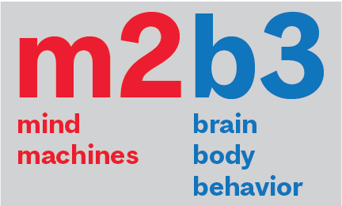

We work at the interface between the mind, brain, machines and the external world, using behavioral measurements (including eye tracking), physiological measurements and computational modeling. We work with humans and animals, as well as with open datasets, and much of our research focus is on vision, hearing and eye-movements, including both sensory, attentional and cognitive aspects. We keep a keen eye on direct applications to devices, algorithms and human health.
More details on the Projects page.
News
** April 2024** - Buxin and Haoxiang complete their Masters defense with flying colors. Alexandru, Youzhi, Lilia and Romina complete their year-long research courses. Yohai’s team wins third prize in the Mistral AI hackathon in Paris during the R.AI.SE summit.
March 2024 - Both Oren’s team and Noa’s team get CIRMMT Student Awards (at the maximum level). Congrats Oren and Noa ! 🏆
March 2024 - Yohai gets accepted to and will attend the CIFAR Deep Learning + Reinforcement Learning (DLRL) Summer School. Congrats Yohai ! 🏆
March 2024 - Welcoming Louis to the lab as a computer vision and neuro-AI intern from Telecom Paris (until August 2024). 🎉
February 2024 - Welcoming Lilie, Joshua and Pauline, our new musically-oriented members/collaborators. 🎉
February 2024 - Yohai gets a CAMBAM Masters Fellowship for this year, to add to his UNIQUE Fellowship. Congrats Yohai ! 🏆
February 2024 - A warm welcome to Jerome, our new, but experienced Research Associate. 🎉
January 2024 - Amanda gets a CGSM award ! Congrats Amanda! 🏆
January 2024 - Yohai has smooothly and successfully completed his PhD fast-track seminar and will formally become a PhD student from September (after immigration formalities). Congrats Yohai!
January 2024 - Kasia receives a UNIQUE travel award to attend the Vision Sciences Society meeting this summer in Florida. Congrats Kasia! 🏆
December 2023 - Yohai gets a UNIQUE Excellence Scholarship (Level: Masters). Congrats Yohai ! 🏆
October 2023 - Kasia gets a best poster award at the UNIQUE Neuro-AI meeting in Mont-Tremblant. Congrats Kasia! 🏆
September 2023 - More preprints out ! Congrats Yohai. 📄
September 2023 - Noa gets a VHRN recruitment award. Congrats Noa! 🏆
September 2023 - Welcoming Noa (Masters), Alexandru and Lilia (NSCI 410), Youzhi (PSYC 494), and Romina (COGS 401) to the lab. 👋
August 2023 - The first set of lab preprints is out ! Congrats Kasia and Buxin. 📄
August 2023 - Oren has won the Jenny Panitch Beckow Memorial Scholarship (CAD 20,000) for his musical absorption project. Congrats Oren ! 🏆
July 2023 - Yohaï and the team he led won the AI Safety Hackathon organized by Meta AI and Entrepreneur First at Meta’s Paris office. 🏆
June 2023 - Alexandru, Bradley, Yavuz, Lilia, and Youzhi join the lab as summer interns. Alexandru and Youzhi will do 2-semester research courses with us (NSCI 410 and PSYC 494) after that until Summer 2024. 👋
May 2023 - Kasia has been awarded a VHRN Scientific Presentation and Training award. 🏆
Mar 2023 - The team of Anais, Amanda, Yohai and Ula has been awarded a CIRMMT student award to work on their music performance project. 🏆
Jan 2023 - If you have programming skills, are interested in a paid summer internship (June-July-August), and are relatively new to open-source, get in touch - we may have 2 or more Google Summer of Code projects available.
Jan 2023 - Yohai and Oren get VHRN recruitment awards. Congrats both! 🏆
Jan 2023 - Kasia has been awarded a UNIQUE postdoctoral excellence fellowship! 🏆
Jan 2023 - Yohai and Oren join the lab as new graduate students; Anais starts her undergraduate research course in the lab. Welcome! 👋
Nov 2022 - Amanda and Kasia present the first poster from the lab at the VHRN meeting in Montreal. 🏆
